AI Academy · Level 1 · Grade 6 · Week 31 · Student lesson
Design the Decision Process
Learn to understand, design, build, test and explain AI systems responsibly.
Project: Helpful Classroom Sorter
Before you start
Week 10: AND, OR and ordered branches change outcomes.
Plan time to read, investigate and explain. Keep predictions separate from observations.
Student lesson · 1 of 18
Your mission
Start with the target: Design a decision process that covers valid, invalid and no-match requests. Try the recall before opening notes.
Your learning target
I can design a decision process that covers valid, invalid and no-match requests.
I can trace changing state and explain why the search stops.
I can preserve both compatibility conditions and the agreed first-match rule.
Remember before reading
Close your notes first. A rough first answer helps us choose the right starting point; it is not a score for your ability.
Without opening the old lesson, explain one key idea from Choose Inputs and Outputs. Give an example and a mistake that the idea helps you avoid.
Without opening the old lesson, explain one key idea from Humans Set Boundaries. Give an example and a mistake that the idea helps you avoid.
Without opening the old lesson, explain one key idea from Generate, Retrieve, or Calculate?. Give an example and a mistake that the idea helps you avoid.
After trying, check the relevant lesson or ask your teacher. Change the part of your explanation that the evidence shows was wrong.
Rules or learned patterns must connect inputs to outputs transparently.
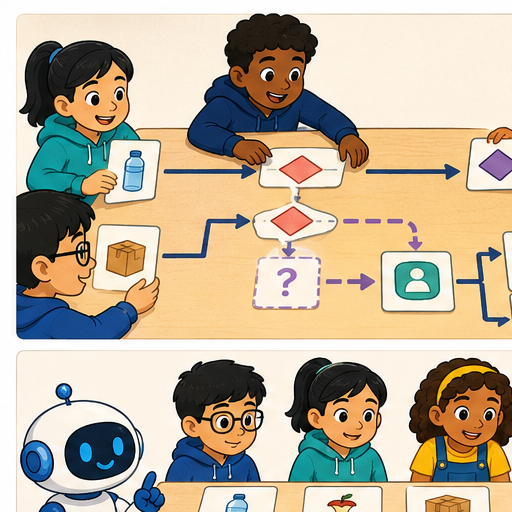
Your target
LEARNING TARGET Rule: if paper then P, otherwise M. Inputs are paper, metal, glass and unknown. Repair the rule for paper and metal trays without inventing a glass tray. Trace all four inputs.
Learner name:
Readiness for the connected explanation
For the activity project, how does a blank time differ from a valid request for zero minutes?
This week’s end goal
By the end, I can design a complete decision flow with validation, search and stopping.
Student lesson · 2 of 18
Notice the evidence
Investigate the supplied Design the Decision Process case. Separate observations, given facts and assumptions before choosing an explanation.
PICTURE STORY
Look Closely Before You Explain
Pictures give clues; evidence tells us what the clues mean.

Start with this puzzle
MYSTERY A transparent sorter first checks item type, then one disambiguating feature, then sends unclear items to review.
What do you notice?
Name three visible details without explaining them yet.
Circle the detail most connected to the system's decision.
Name one detail that may be decoration or distraction.
Make a first prediction and state the clue that supports it.
My observations, prediction, and evidence:
Thinking habit
GOOD THINKING A prediction can change when stronger evidence appears.
A closer explanation
A complete process says what happens for every kind of request in the task. It must handle a fitting activity, no fitting activity and unusable input. We will design a paper algorithm before building the prototype.
Its decisions use the requirements from Week 30, so a different drawing should not silently change what counts as correct.
Keep the same catalogue order: B1 Bookmark drawing, 10 minutes, quiet Yes; B2 Story circle, 8 minutes, quiet No; B3 Pattern puzzle, 12 minutes, quiet Yes; B4 Tower challenge, 15 minutes, quiet No.
These are fixed paper-model values with materials assumed available. Valid input is a whole number of minutes from 0 to 30 and Quiet required Yes or No.
A candidate fits when its required minutes are no more than the available minutes and either quiet is not required or the activity is quiet. Both parts must hold.
The output is the first fitting activity in catalogue order, with a reason, or a clear no-match result. Invalid or missing input produces a clarification request. None of these outputs books materials or publishes a message.
Student lesson · 3 of 18
See how it works
Follow the mechanism for Design the Decision Process. Connect each labelled input, deciding step and result.
VISUAL MECHANISM
Input → Process → Output
Follow the information instead of imagining magic inside the machine.
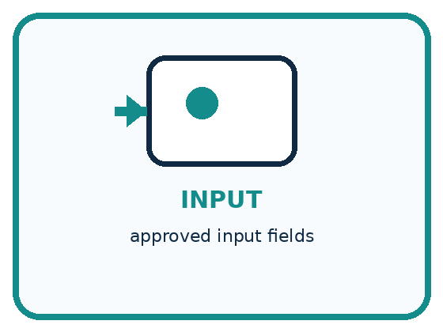
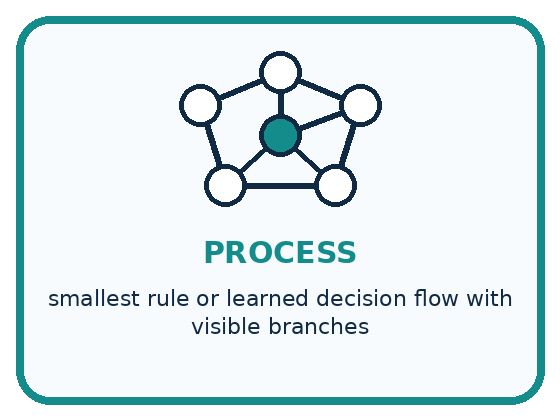
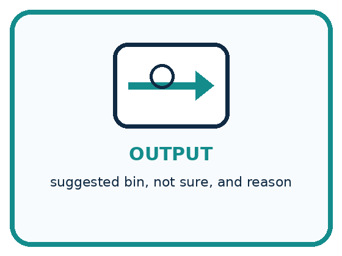
INPUT approved input fields
PROCESS smallest rule or learned decision flow with visible branches
OUTPUT suggested bin, not sure, and reason
Key idea
CORE IDEA Rules or learned patterns must connect inputs to outputs transparently.
How the mechanism works
UNDER THE HOOD A decision process operationalizes the interface contract. Simplicity improves testability and explanation, but oversimplification can erase relevant distinctions.
Learned components need explicit data, threshold, and fallback documentation.
Draw a fresh example with all three stages:
A closer explanation
Four paths through the recommender
Begin by checking the request. If minutes are missing, outside 0 to 30 or not a whole number, ask for a whole number in that range. If the quiet field is not Yes or No, ask for one of those values.
State the fields needing correction and stop this run. When a corrected request arrives, validate it as a new run rather than continuing with old candidate state.
For a valid request, start at B1. Check time and the quiet condition for the current candidate. If both pass, output that candidate and stop. If either fails, move forward exactly one row.
After B4 fails, there is no next row, so output no match and stop. Never jump back to B1 within the same search.
Connect the picture and the explanation
Point to the input, the deciding step and the result in this week’s visual. Explain the same step in ordinary words. A picture helps when you can say what each part represents.
Student lesson · 4 of 18
Compare the cases
Compare the supplied cases for Design the Decision Process. Identify the detail that changes the conclusion.
PICTURE GALLERY
Four Cases, Four Clues
Use the visual cue, then read the evidence carefully.
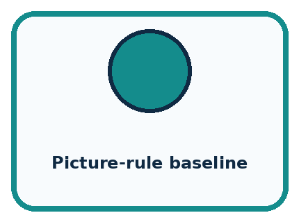
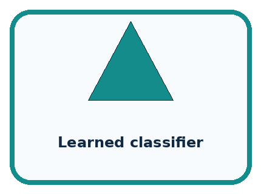
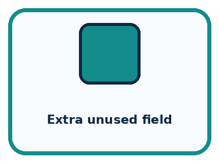
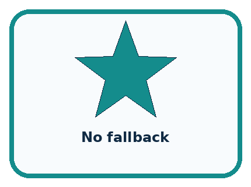
The case to investigate
CASE 1 — Picture-rule baseline Clue: direct visible branches. Meaning: easy to inspect.
The case to investigate
CASE 2 — Learned classifier Clue: patterns from examples. Meaning: needs data evidence.
The case to investigate
CASE 3 — Extra unused field Clue: never changes path. Meaning: remove.
The case to investigate
CASE 4 — No fallback Clue: forces ambiguous label. Meaning: add review.
Keep this boundary clear
BOUNDARY Transparent does not mean correct; the flow still needs testing.
Which two pictures are easiest to confuse? What evidence separates them?
Change one thing in the pictured case
Change one thing
Change: Increase scissors needed to 3.
Predicted result
Prediction: K3 is selected.
Why the result follows
Reason: K1 lacks glue; K2 has only 2 scissors; K3 has glue and 4.
Student lesson · 5 of 18
Words that unlock the idea
Use the vocabulary of Design the Decision Process to explain a concrete decision, rather than only memorising definitions.
VOCABULARY
Words You Can See and Use
The badge is a memory cue; the definition does the real thinking work.
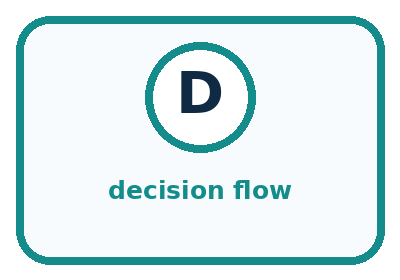
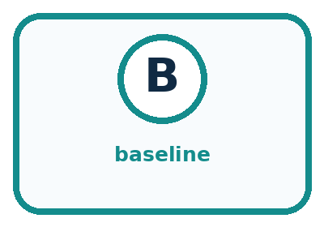
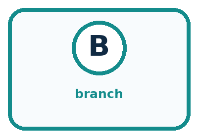
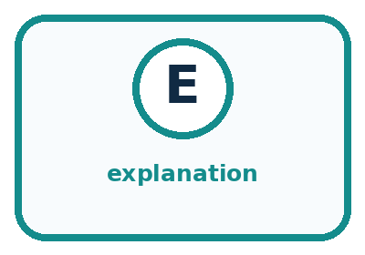
| Word | Meaning | My example |
|---|---|---|
| decision flow | ordered path connecting inputs to outputs | |
| baseline | simple method used for comparison | |
| branch | path chosen by a condition | |
| explanation | traceable reason for an output |
Misconception detective
Find the unsupported claim
CLAIM TO REPAIR A longer flow must be more capable.
Use one vocabulary word and one piece of evidence to repair it:
WORD POWER A strong definition helps you decide something in a new case.
Words used in the closer explanation
| Word | Meaning |
|---|---|
| Validation | Checking an input against the agreed rules before using it |
| Candidate | An option currently being checked |
| State | Information that records the process’s current position or values |
| Termination | Reaching a point where the process stops |
Student lesson · 6 of 18
Follow a worked example
Follow the worked trace for Design the Decision Process, predict a step, then compare with its explanation.
WORKED EXAMPLE
Watch the Reasoning, Not Just the Answer
Every step connects a claim to observable evidence.

The case to investigate
CASE A transparent sorter first checks item type, then one disambiguating feature, then sends unclear items to review.
Step 1
STEP 1 — OBSERVE approved input fields
Step 2
STEP 2 — TRACE smallest rule or learned decision flow with visible branches
Step 3
STEP 3 — CONCLUDE suggested bin, not sure, and reason
Model answer
MODEL REASONING Start with a baseline whose branches can be read aloud. Each input must affect a decision or be removed. Add not-sure and review paths, then explain when a learned component would earn its added complexity.
A claim to avoid
DO NOT OVERCLAIM Transparent does not mean correct; the flow still needs testing.
What new evidence could change this answer?
A closer explanation
| Stage for 9 minutes and Quiet required No | Evidence | Next state or output |
|---|---|---|
| Validate | 9 is a whole number in range; No is valid | Current candidate B1 |
| Check B1 | 10 minutes is more than 9 | Move to B2 |
| Check B2 | 8 is no more than 9; quiet is not required | Suggest B2 and stop |
Worked explanation · Design the Decision Process
The current candidate changes from B1 to B2. The request values stay the same. After B2 passes, the process stops: it does not replace B2 with a later fitting row.
This early stop preserves the first-match rule and gives the same required suggestion as the manual baseline, which marked every row before selecting the first fit.
Worked explanation · Design the Decision Process
Termination needs a reason. There are only four rows, each failed check moves to the next row, and no row is revisited. A valid request therefore examines at most four candidates. A success can stop sooner.
Invalid input stops before the search. Merely drawing an arrow around a loop is not enough; the state must make progress toward an end.
Learn from the worked case
Cover the result before checking it. Say what is given, choose the procedure, and follow one step at a time. Then uncover the result and explain your first mismatch. Ask why a step is allowed, not only what number it produces.
A pictorial worked case: Design the Decision Process
A fictional worksheet routes craft kits by required glue and number of scissors.
The facts we will use
Supplied facts
K1: glue No, scissors 2. K2: glue Yes, scissors 2. K3: glue Yes, scissors 4.
Supplied facts
Request: glue required Yes, scissors needed 2. Return first kit meeting both requirements.
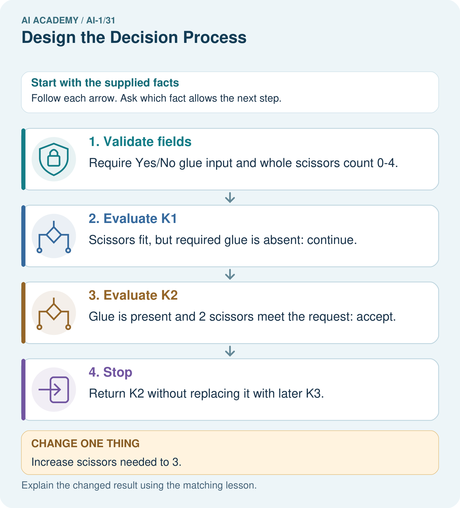
Read the picture one step at a time
Why this result follows
Why the result follows
A complete decision process specifies what to do after each result. One passing requirement is insufficient.
After a kit passes both, stopping preserves the first-match contract; automatically choosing the largest later kit would implement a different rule. A full scan with no accepted kit returns no match.
What this example does not establish
Keep the stated limit
A correct flow depends on accurate catalogue entries and the declared requirements; the picture does not verify inventory.
Keep the stated limit
Read the labelled picture: Where does the first original rejection occur, and why is K3 not originally selected?
Keep the stated limit
Change one thing: Increase scissors needed to 3. Predict the result before checking the explanation. What remains the same?
Student lesson · 7 of 18
Find and repair a mistake
Find the unsupported step in the Design the Decision Process claim and explain a repair using the supplied evidence.
COMPARE
Same Result, Different Reason
A comparison helps reveal the true concept boundary.
| Case | Evidence | What it shows |
|---|---|---|
| Picture-rule baseline | direct visible branches | easy to inspect |
| Learned classifier | patterns from examples | needs data evidence |
| Extra unused field | never changes path | remove |
| No fallback | forces ambiguous label | add review |
Repair two tempting claims
Challenge claim A
CLAIM A A longer flow must be more capable.
Repair:
Challenge claim B
CLAIM B A learned model does not need a visible fallback or explanation.
Repair:
A frame for explaining
STRONG ANSWER FRAME I claim ______ because the evidence shows ______. The process is ______. One limit is ______.
A closer explanation
Check the claim against the facts
An explanation should identify the checks that actually justified the result. For example, B2 fits the 9-minute No request because its 8-minute duration fits and quiet was not required.
Do not add “you will love it”, which was neither an input nor a tested condition. For no match, report that no catalogue row met both conditions; a trace can show why.
Check the claim against the facts
Save a labelled version of the process with its validation, candidate order, conditions, state changes and stopping points. A partner should be able to follow it without asking you to fill a missing step.
Next week the paper prototype will turn this design into instruction cards and a trace record. Keep any final evaluation cases reserved while developing the design.
Student lesson · 8 of 18
Practise together
Practise Design the Decision Process with support, then explain the deciding step in your own words.
GUIDED PRACTICE
Try It, Check It, Explain It
Use support now so you can succeed independently later.

Explain how the picture story demonstrates this idea: Rules or learned patterns must connect inputs to outputs transparently.
Use a fresh example to explain decision flow.
Trace a new input → process → output example.
Find and repair the error in: A learned model does not need a visible fallback or explanation.
Invent one edge case and name the safe response.
Check with a partner
PARTNER CHECK Point to the evidence. Do not accept an answer that only repeats the vocabulary word.
A closer explanation
Consider the mistaken instruction “If B1 fails, report no match.” It would miss B2 on the 9-minute No request.
Another mistake is “If time fits or quiet fits, suggest the activity.” That could allow an activity that takes too long merely because it is quiet. Use a concrete request to show which requirement a design breaks.
A process must also distinguish the meaning of No from a requirement for noise. When Quiet required is No, a quiet candidate can still pass. For 11 minutes No, B1 fits and comes first, even though B2 also fits.
An instruction to reject all quiet activities when No is selected would change the task.
Practise with less help: Track the current candidate
Use workbook W2 for the connected example “Designing a complete decision process”. First fill the input and rule boxes. Try the middle steps before asking for a hint. After a hint, try the next step yourself.
| Plan | Do | Check |
|---|---|---|
| What is given? Which rule or procedure applies? | Record each intermediate step. | Does the result follow? What remains unknown? |
Explain your trace to a partner. Your partner points to one step to check. Swap roles on the next case. Each person writes their own explanation.
Check your reasoning
Use the worked case for Designing a complete decision process. Proposed explanation: “One failed row proves no match”. Decide whether this explanation is supported.
Point to the step or supplied fact that decides; explain your repair if needed.
Answer on your own before discussion. If you are unsure, say which step you need help with.
Explain the picture
Where does the first original rejection occur, and why is K3 not originally selected?
This is supported practice. Keep the separately named independent case for an attempt before feedback.
Student lesson · 9 of 18
Run the investigation
Investigate Design the Decision Process. Record the prediction, actual observation or labelled paper trace, explanation and next test separately.
EXPLORER LAB
Smallest Useful Flow
Predict first, test honestly, and explain what the evidence means.
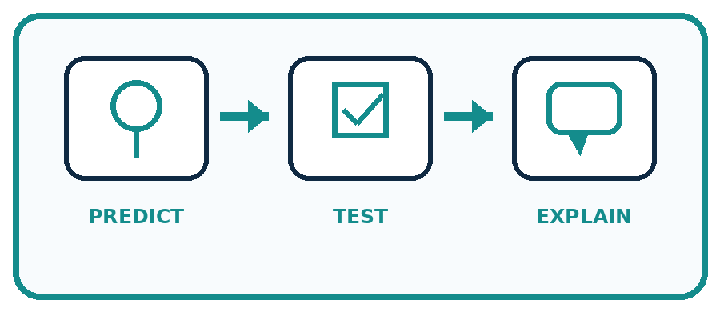
1. Predict
State your prediction before the result is known.
2. Investigate
Complete the task: Create and trace the smallest useful decision flow.
3. Compare cases
Keep a normal case and an edge case clearly separated.
4. Record honestly
Record what happened—even when it does not match your prediction.
5. Explain and plan the next test
Explain the result, one limitation, and the next useful test.
| Case | Prediction | Observed result | What it means |
|---|---|---|---|
| Normal | |||
| Edge |
Use a fresh case after support
INDEPENDENCE After support is removed, repeat the proof with a fresh case.
Plan → try → check
Before trying: what do I expect, and why? While trying: which step could first go wrong? Afterwards: what did I actually observe, and what should change? Keep “not run” if you only traced the procedure.
Student lesson · 10 of 18
Build your understanding
Move from recall to tracing, diagnosis and transfer in Design the Decision Process. Explain why each step is justified.
PRACTICE LADDER
Climb from Recall to Defense
Each step asks for a stronger kind of understanding.
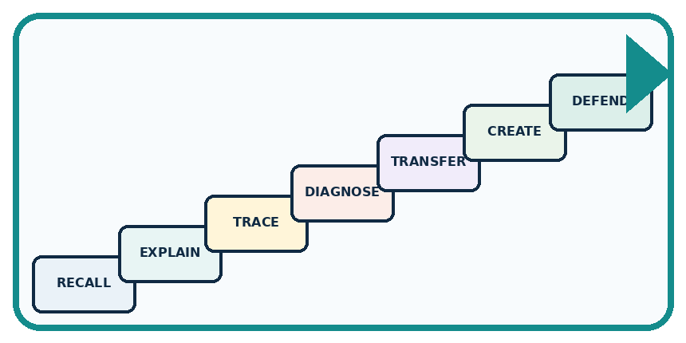
RECALL Define decision flow.
EXPLAIN Rules or learned patterns must connect inputs to outputs transparently.
TRACE Show the input, process, and output.
DIAGNOSE Repair: A longer flow must be more capable.
TRANSFER Apply the idea to a new home or classroom case.
CREATE Design one revealing test.
DEFEND Give a claim, evidence, mechanism, limit, and safe action.
When to retry
RETRY RULE A coached answer becomes mastery only after you solve a different case independently.
Student lesson · 11 of 18
Connect your project
Apply this week’s idea to Helpful Classroom Sorter. Keep an annotated decision and the evidence supporting it.
PROJECT
Helpful Classroom Sorter
Build one coherent system across the year, one evidence-based decision at a time.
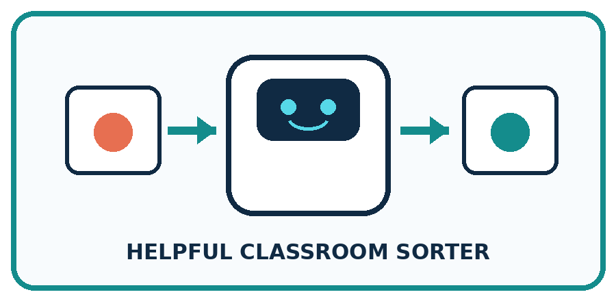
THIS WEEK'S CHECKPOINT Complete the sorter v1 decision flow and annotate every branch with the evidence it uses.
What real classroom need does this serve?
What information is necessary—and what should stay private?
What happens inside the process?
What normal and edge cases will you test?
When should it say not sure or ask a person?

Responsible design
RESPONSIBLE DESIGN Transparent does not mean correct; the flow still needs testing.
My project decision:
Evidence for your project
Draw the sorter’s decision branches, loop-back arrows, final outputs and invalid-input path so every valid case can terminate.
Student lesson · 12 of 18
Show what you know
Use a genuinely new case for independent evidence. Previously discussed examples remain practice; use the separately named independent case before feedback.
MASTERY
Fresh-Case Independent Proof
Complete this after teaching and guided practice have ended.
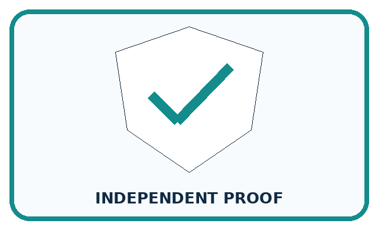
What success looks like
REQUIRED PROOF Create and trace the smallest useful decision flow across normal, missing, and ambiguous inputs.
□ Name or draw the fresh case.
□ Trace input, process, and output.
□ State the conclusion and strongest evidence.
□ Name one limit, failure, missing clue, or fairness/privacy concern.
□ Explain one safe next action or improvement.
Independent evidence:
Check your explanation
SELF-CHECK Start with a baseline whose branches can be read aloud. Each input must affect a decision or be removed. Add not-sure and review paths, then explain when a learned component would earn its added complexity.
My level: □ Not yet □ With one hint □ Independently □ I can teach it
Connect to the next lesson
NEXT BRIDGE Carry today's evidence habit into: Build a Paper Prototype.
Student lesson · 13 of 18
Study a complete case
Revisit the complete Design the Decision Process case for supported practice. Repeated examples do not become fresh assessments.
Week 31 Worked case
Use the supplied details to practise the weekly concept before attempting the independent question. This case extends the illustrated lesson.
The situation
A rule sends paper to P and everything else to M. Inputs include paper, metal and glass.
The question
Trace glass and repair the rule.
Worked explanation
Glass incorrectly goes to M. Add an explicit metal check and a glass or review branch. Otherwise includes all remaining cases.
Explain it in your own words
Which detail supports the answer, and why does it matter?
Trace the supplied case visually
Otherwise includes every remaining case
| Evidence or stage | Value or result |
|---|---|
| Paper | Yes → P |
| Not paper, metal | Yes → M |
| Not paper, not metal | Glass or review |
A rule sends paper to P and everything else to M. Inputs include paper, metal and glass.
Trace glass and repair the rule.
Glass incorrectly goes to M. Add an explicit metal check and a glass or review branch. Otherwise includes all remaining cases.
Student lesson · 14 of 18
Try a new case independently
Attempt the reserved new case before feedback. Record support; the earlier examples below remain additional practice.
Independent case: Design a complete room decision process
A new paper catalogue lists C1 first, capacity 4, quiet Yes; C2 second, capacity 8, quiet No. Valid requests give a whole group size from 1 to 10 and Quiet required Yes or No.
A room fits if capacity is at least group size and the quiet condition is met; choose the first fit. Write a complete process with validation, search, state change and stopping rules.
Trace 6 people No and explain the outcome for a blank quiet field. No booking takes place.
Attempt this case before feedback. Record any help. Earlier examples below are further practice; a case already practised with feedback cannot establish fresh transfer.
Week 31 Independent application
Close the worked explanation. Apply the idea to this different question without copying.
Write a decision process: a clear pencil goes to the pencil tray, a clear book to the shelf, and an unknown object to review. Trace a lunch box.
My answer, with a trace, calculation or supporting evidence
Create and test
Change one relevant detail. Predict the result before testing. Include a boundary or missing-information case when it helps reveal a limit.
My changed input and expected result
Connect to your project
Complete the sorter v1 decision flow and annotate every branch with the evidence it uses.
The evidence I will keep
Your teacher has the independent answer and scoring criteria. Complete the matching workbook week to keep your practice evidence together.
Transfer practice from the original programme
Rule: if paper then P, otherwise M. Inputs are paper, metal, glass and unknown. Repair the rule for paper and metal trays without inventing a glass tray. Trace all four inputs.
Use feedback to improve
Attempt the independent case before hints. Record whether you worked alone, used a hint or followed a model. After feedback, fix the first unsupported step and explain why it changed.
A later check uses a changed case, not a copied answer.
Student lesson · 15 of 18
Your lesson route
Use this map to navigate Design the Decision Process, connect the goals to tasks and keep one evidence record for each attempt.
Start with this question: A fictional worksheet routes craft kits by required glue and number of scissors.
| By the end, I can | How I will show it |
|---|---|
| Design a decision process that covers valid, invalid and no-match requests | Explain the deciding step, show a trace or test, and state one limit. |
| Trace changing state and explain why the search stops | Explain the deciding step, show a trace or test, and state one limit. |
| Preserve both compatibility conditions and the agreed first-match rule | Explain the deciding step, show a trace or test, and state one limit. |
Remember → watch and explain → try with help → investigate → try independently → keep project evidence. Your teacher may spread this lesson across several classes.
Keep your first prediction. Compare it with what the evidence shows and explain any change.
Student lesson · 16 of 18
Finish and return
Explain Design the Decision Process without notes, identify a remaining question and plan a later check with a changed case.
Close your notes. Explain this goal in your own words: Design a decision process that covers valid, invalid and no-match requests
If you are unsure, return to the worked picture and explain one arrow. If you are ready, change an input or assumption and justify your prediction.
Save your workbook evidence. At the next review, try a different case before opening your old answer.
Student lesson · 17 of 18
Supported practice, repair and portfolio
Attempt supported questions before using hints or feedback. Review a missing building block, then keep the completed work.
Use this supported practice once, in the browser or on paper. Keep the reserved independent assessment for a separate first attempt before teacher feedback.
A fictional worksheet routes craft kits by required glue and number of scissors.
Practice 1: explain the deciding evidence
Which labelled step matches this detail? Return K2 without replacing it with later K3.
1. Stop
2. Evaluate K1
3. Evaluate K2
4. Validate fields
Hint · try first
Hint if needed: Read the steps in the pictorial case. Match the supplied detail to the stage that performs or records it.
Feedback · compare after trying
After your attempt, compare with the supported explanation: Stop Return K2 without replacing it with later K3. A complete decision process specifies what to do after each result. One passing requirement is insufficient.
After a kit passes both, stopping preserves the first-match contract; automatically choosing the largest later kit would implement a different rule. A full scan with no accepted kit returns no match.
Practice 2: explain the deciding evidence
Changed case · predict first
Changed-case practice: Increase scissors needed to 3. Which conclusion is supported by the supplied facts?
1. K3 is selected.
2. We can decide the result without examining the changed input or the procedure.
3. This one example guarantees correct results for every future input.
Hint · try first
Hint if needed: Use the changed condition and the deciding step in the pictorial trace. The answer must say what follows from those facts.
Feedback · compare after trying
After your attempt, compare with the supported explanation: K3 is selected. K1 lacks glue; K2 has only 2 scissors; K3 has glue and 4.
Repair a missing building block
Review Choose Inputs and Outputs (ai-1/30). Goal: Turn the project outcome into precise input and output requirements. Short practice: Trace requests 10 and blank. Why should they not receive the same explanation?.
Return to this week and explain what you changed.
Review Humans Set Boundaries (ai-1/28). Goal: Distinguish a system’s capability, the correctness of its output and permission to take an action. Short practice: Which original proposal is authorised?
Why do the other two need separate approval?. Return to this week and explain what you changed.
Review Generate, Retrieve, or Calculate? (ai-1/25). Goal: Distinguish retrieving a record, calculating from inputs and generating wording. Short practice: Label each arrow with its operation.
Can the system add snacks because invitations often mention them?. Return to this week and explain what you changed.
Keep your completed work
Use Download completed work in the hosted lesson to export your answers, reflections, practice feedback and code-run evidence. Open the HTML copy to read or print it.
Drafts stay in this browser when storage is available; clear drafts on a shared device.
Student lesson · 18 of 18
Visual concept journey
Explain each Design the Decision Process graphic using its labels, deciding evidence and relevant limitation.
01. Design the Decision Process: the case
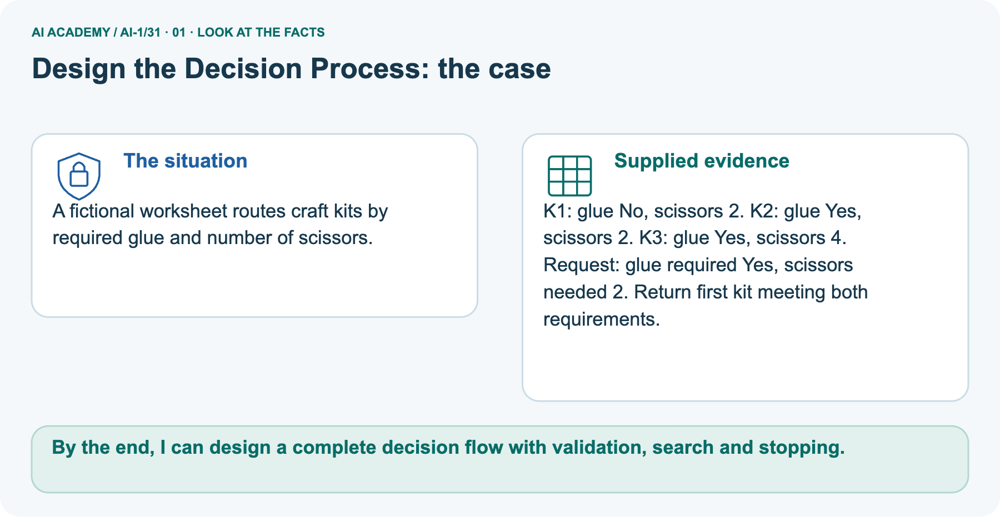
A fictional worksheet routes craft kits by required glue and number of scissors. Supplied facts: K1: glue No, scissors 2. K2: glue Yes, scissors 2. K3: glue Yes, scissors 4. Request: glue required Yes, scissors needed 2.
Return first kit meeting both requirements.
Point to the given fact that matters most. Explain why it matters.
02. Follow the deciding steps
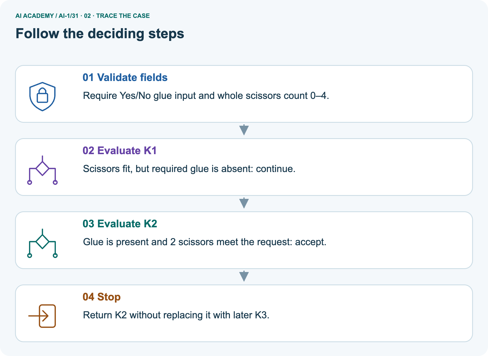
Validate fields: Require Yes/No glue input and whole scissors count 0–4. → Evaluate K1: Scissors fit, but required glue is absent: continue. → Evaluate K2: Glue is present and 2 scissors meet the request: accept. → Stop: Return K2 without replacing it with later K3.
Point to each numbered stage and explain which recorded input it uses.
03. Four paths through the recommender
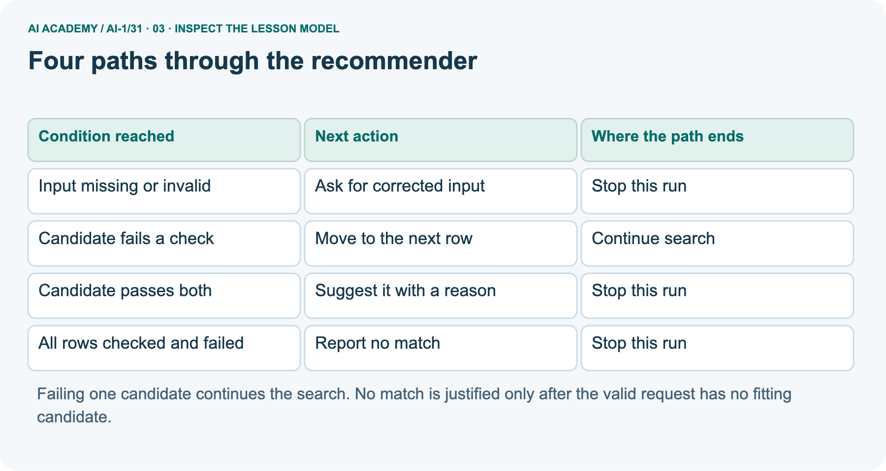
Four paths through the recommender. Input missing or invalid | Ask for corrected input | Stop this run. Candidate fails a check | Move to the next row | Continue search.
Candidate passes both | Suggest it with a reason | Stop this run. All rows checked and failed | Report no match | Stop this run
Read the labels and values. Explain the relationship the model shows.
04. Change one thing. Trace what follows.
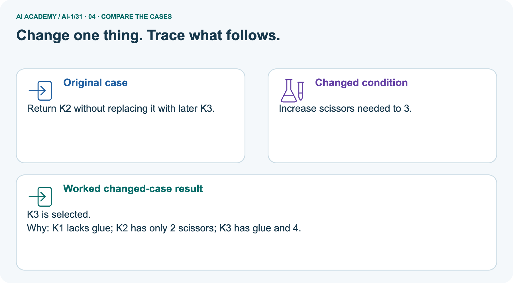
Original case: Return K2 without replacing it with later K3. Changed condition: Increase scissors needed to 3. Expected result: K3 is selected. Reason: K1 lacks glue; K2 has only 2 scissors; K3 has glue and 4.
Predict before checking the worked changed-case result. Name what changed and what the supplied facts allow you to conclude.
05. Connect the explanation to its limit
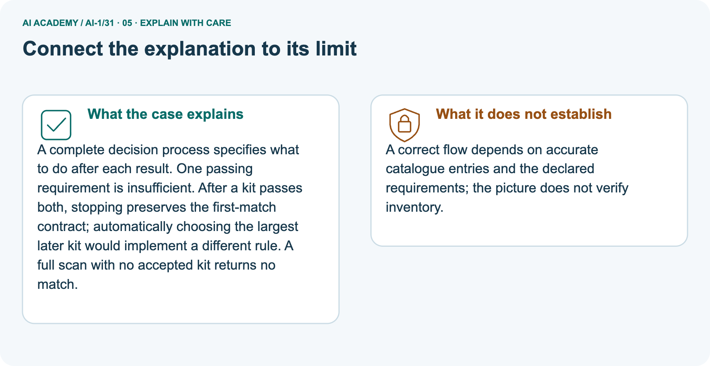
A complete decision process specifies what to do after each result. One passing requirement is insufficient.
After a kit passes both, stopping preserves the first-match contract; automatically choosing the largest later kit would implement a different rule. A full scan with no accepted kit returns no match.
Limit: A correct flow depends on accurate catalogue entries and the declared requirements; the picture does not verify inventory.
Explain the case, then point to a limit on the claim.
06. Make the idea visible in your project
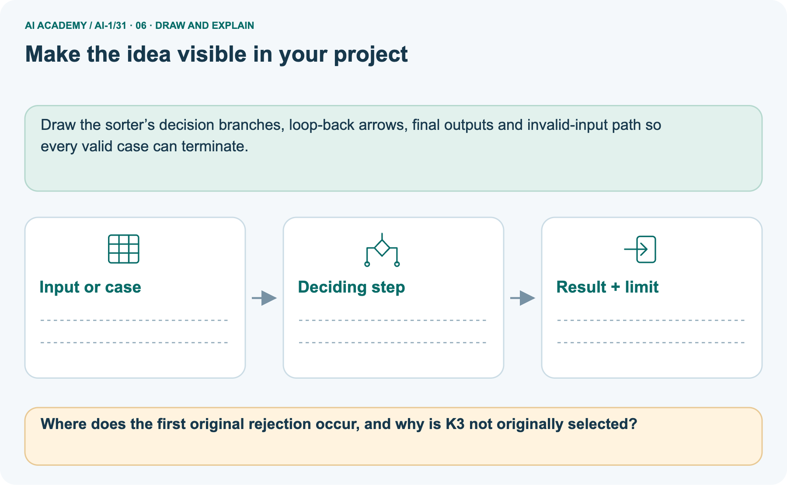
Draw the sorter’s decision branches, loop-back arrows, final outputs and invalid-input path so every valid case can terminate. Draw your input, deciding step, result and limit.
Supported question: Where does the first original rejection occur, and why is K3 not originally selected?
Draw your project trace and justify the deciding step using evidence.